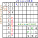
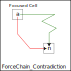

Force
(本サイトの解法アルゴリズムについて共通のことですが、)
Force系アルゴリズムで用いるのは、全て現局面の（拡張）リンクです。
このリンクを用いてチェインを組立て、論理でセルの候補数字の真偽を導びきます。
Force系アルゴリズムは次の論理に基づいている。
- 集合Xは、要素数n、1要素は真で残りは偽とする。どの要素が真であるかは未定。
- 真値の要素から始めたチェインでは、導かれる要素の値は真または偽と確定する。
- 偽値の要素から始めたチェインでは、導かれる要素の値は不確定となる（真でも偽でも導ける）。
- 集合Xの各要素を真と仮定して始めるそれぞれのチェインについて、全てのチェインの導く要素Aの真偽値が一致したとき、要素Aの真偽は確定する。
- 集合Xの1要素Bを真と仮定して始めるチェインで、複数ルートで導かれる要素Cの真偽値が一致しないとき、起点要素Bは偽と確定する。

Force系アルゴリズムは、論理による解法です。拡張リンク、チェイン構成も比較的単純であり、また解析の効率も高く、解析アルゴリズムとして優れものです。
数独は論理パズル
ForceChain
スーパーリンクを使う解析アルゴリズムです。
アルゴリズム名に"Chain"が付いていますが、NiceLoopなどの試行を繰返すchain探索ではなく、波及的探索を用いています。
また、1つの局面で同じ探索結果を繰返し用いるので、結果を記憶・参照する方法を用います。
本サイトは、HoDoKuを参考にしています。
そこでは、ForceChainは”Last Resort(最終手段）”のページにあります。ForceChainは極めて強力な解析アルゴリズムであることは確かです。
しかし、これまでに示してきたアルゴリズムでは解けず、ForceChainが必要な問題があるかは、分かりません（2015年8月現在）。
このアルゴリズムで用いている SuperLinkMan/Eval_SuperLinkChainEx は強力なルーティンで、起点セル、着目数字、最初のリンクの強弱を指定して、
そこから導ける全てのリンクを求めます。プロジェクトにC#ソースコードがあります。
（1）ForceChain_Cell
1つの未確定セルAに着目したとき、セルAの候補数字のどれを真と仮定しても、リンクで連結するセルBの数字#nが真となるとき、Bセルは#nが真と確定します。

セルAの候補数字aを真と仮定してリンクをたどるとき、あるセルのある数字が真と偽の両方が導けることがあります。
これは以下の(3)ForceChain_Contradictionの場合で、最初の命題「A#aは真」は誤りであり、
したがって「A#aは真」を起点とするリンクはあり得ません。
上の図で、真と偽の両方が導ける起点は除外してよいことになります。
残りのリンクについて真が導けるときB＃nは真と確定します。
GNPXの実装では、このケースはForceChain_Cellの解には含めずに、ForceChain_Contradictionで解くようにしてあります。
ForceChain_Cellの例です。セルr2c8の数字が#1としても#2としても、セルr6c6は#2となるので#2と確定します。このときのリンク列を示します。

ForceChain_Cell
r6c6#2 is true
✿[W r2c8/+2 -> r2c6/-2] => [S r2c6/-2 -> r6c6/+2]
1526.7.893...5...4...9.3..75.8...2.6.6.....9.9.3...4.14..5.6...6...3...573.4.1962
ForceChain_Cellは、同時に複数のセル・数字を確定します。

ForceChain_Cell
r6c6#2 is true
r2c6#8 is true
r6c4#8 is true
ForceChain_Cell r6c6#2 is true
✿[W r2c8/+1 -> r2c4/-1] => [S r2c4/-1 -> r3c5/+1] => [W r3c5/+1 -> r5c5/-1] => [W r5c5/+7 -> r5c7/-7] => [S r5c7/-7 -> r8c7/+7] => [W r8c7/+7 -> r8c4/-7] => [W r8c4/+2 -> r6c4/-2] => [S r6c4/-2 -> r6c6/+2]
✿[W r2c8/+2 -> r2c6/-2] => [S r2c6/-2 -> r6c6/+2]
ForceChain_Cell r2c6#8 is true
✿[W r2c8/+1 -> r2c4/-1] => [S (ALS:r2468c4) r2c4/-1 -> r4c4/+3] => [W r4c4/+3 -> r4c8/-3] => [S r4c8/-3 -> r7c8/+3] => [S r7c8/-7 -> r7c5/+7] => [S r7c5/-2 -> r3c5/+2] => [W r3c5/+2 -> r2c6/-2] => [S r2c6/-2 -> r2c6/+8]
✿[W r2c8/+2 -> r3c8/-2] => [S r3c8/-2 -> r3c5/+2] => [W r3c5/+2 -> r2c6/-2] => [S r2c6/-2 -> r2c6/+8]
ForceChain_Cell r6c4#8 is true
✿[W r2c8/+1 -> r2c4/-1] => [S r2c4/-1 -> r3c5/+1] => [W r3c5/+1 -> r5c5/-1] => [W r5c5/+7 -> r5c7/-7] => [S r5c7/-7 -> r8c7/+7] => [W r8c7/+7 -> r8c4/-7] => [W r8c4/+2 -> r6c4/-2] => [S r6c4/-2 -> r6c4/+8]
✿[W r2c8/+2 -> r2c6/-2] => [S r2c6/-2 -> r6c6/+2] => [S r6c6/-8 -> r6c4/+8]
1526.7.893...5...4...9.3..75.8...2.6.6.....9.9.3...4.14..5.6...6...3...573.4.1962
（2）ForceChain_House
1つのHouseで、候補数字#aをもつセルについて、どのセルの#aを真と仮定しても、リンクで連結するセルBの数字#nが真となるとき、Bセルは#nが真と確定します。

ForceChain_HouseでもForceChain_Cellと同様に、
セルAの候補数字aを真と仮定してリンクをたどるとき、あるセルのある数字が真と偽の両方が導けることがあります。
これは以下の(3)ForceChain_Contradictionの場合で、最初の命題「A#aは真」は誤りであり、したがって「A#aは真」を起点とするリンクはあり得ません。
上の図で、真と偽の両方が導ける起点は除外してよいことになります。 残りのリンクについて真が導けるときB#nは真と確定します。
GNPXの実装では、このケースはForceChain_Houseの解には含めずに、ForceChain_Contradictionで解くようにしてあります。
ForceChain_Houseの例です。行2の候補数字#1をもつセル(r2c48)のどれを真としても、r6c6は#2と確定します。このときのリンク列を示します。
ここでは着目した数字と確定する数字が一致していますが、これは条件ではありません。

ForceChain_House(row2#1)
r6c6#2 is true
✿[W r2c4/+1 -> r2c4/-8] => [S r2c4/-8 -> r2c6/+8] => [S r2c6/-2 -> r6c6/+2]
✿[W r2c8/+1 -> r2c4/-1] => [S r2c4/-1 -> r3c5/+1] => [W r3c5/+1 -> r5c5/-1] => [W r5c5/+7 -> r5c7/-7] => [S r5c7/-7 -> r8c7/+7] => [W r8c7/+7 -> r8c4/-7] => [W r8c4/+2 -> r6c4/-2] => [S r6c4/-2 -> r6c6/+2]
1526.7.893...5...4...9.3..75.8...2.6.6.....9.9.3...4.14..5.6...6...3...573.4.1962
ForceChain_House(row2/#1) r6c6/#2 is true
[W r2c4/+1 -> r2c4/-8] => [S r2c4/-8 -> r2c6/+8] => [S r2c6/-2 -> r6c6/+2]
[W r2c8/+1 -> r2c4/-1] => [S r2c4/-1 -> r3c5/+1] => [W r3c5/+1 -> r5c5/-1] => [W r5c5/+7 -> r5c7/-7]
=> [S r5c7/-7 -> r8c7/+7] => [W r8c7/+7 -> r8c4/-7] => [W r8c4/+2 -> r6c4/-2]
=> [S r6c4/-2 -> r6c6/+2]
ForceChain_Houseは、同時に複数のセル・数字を確定します。

1526.7.893...5...4...9.3..75.8...2.6.6.....9.9.3...4.14..5.6...6...3...573.4.1962
ForceChain_House(row2/#1) r6c6/#2 is true
[W r2c4/+1 -> r2c4/-8] => [S r2c4/-8 -> r2c6/+8] => [S r2c6/-2 -> r6c6/+2]
[W r2c8/+1 -> r2c4/-1] => [S r2c4/-1 -> r3c5/+1] => [W r3c5/+1 -> r5c5/-1]
=> [W r5c5/+7 -> r5c7/-7] => [S r5c7/-7 -> r8c7/+7] => [W r8c7/+7 -> r8c4/-7]
=> [W r8c4/+2 -> r6c4/-2] => [S r6c4/-2 -> r6c6/+2]
ForceChain_House(row2/#1) r2c6/#8 is true
[W r2c4/+1 -> r2c8/-1] => [W r2c8/+2 -> r2c6/-2] => [S r2c6/-2 -> r2c6/+8]
[W r2c8/+1 -> r2c4/-1] => [S (ALS:r2468c4) r2c4/-1 -> r4c4/+3] => [W r4c4/+3 -> r4c8/-3]
=> [S r4c8/-3 -> r7c8/+3] => [S r7c8/-7 -> r7c5/+7] => [S r7c5/-2 -> r3c5/+2]
=> [W r3c5/+2 -> r2c6/-2] => [S r2c6/-2 -> r2c6/+8]
ForceChain_House(row2/#1) r6c4/#8 is true
[W r2c4/+1 -> r5c4/-1] => [S (ALS:r458c4) r5c4/-1 -> r8c4/+2] => [W r8c4/+2 -> r6c4/-2]
=> [S r6c4/-2 -> r6c4/+8]
[W r2c8/+1 -> r2c4/-1] => [S r2c4/-1 -> r3c5/+1] => [W r3c5/+1 -> r5c5/-1] => [W r5c5/+7 -> r5c7/-7]
=> [S r5c7/-7 -> r8c7/+7] => [W r8c7/+7 -> r8c4/-7] => [W r8c4/+2 -> r6c4/-2]
=> [S r6c4/-2 -> r6c4/+8]
(3)ForceChain_Contradiction
あるセル・数字を真と仮定すると、スーパーリンクの連結で他のセルの数字(#n)が 真(+a->+n) および偽(+a->-n)の両方が導けることがあります。
これは矛盾であり、最初の仮定が誤りです。

ForceChain_Contradiction
r2c4#2 is false
ForceChain_Contradiction r2c4#2 is false
✿[W r2c4/+2 -> r2c8/-2] => [S (ALS:r247c8) r2c8/-2 -> r2c8/+1]
✿[W r2c4/+2 -> r8c4/-2] => [W r8c4/+7 -> r8c7/-7] => [S r8c7/-7 -> r5c7/+7] => [W r5c7/+7 -> r5c5/-7] => [W r5c5/+1 -> r3c5/-1] => [S r3c5/-1 -> r3c8/+1] => [W r3c8/+1 -> r2c8/-1]
1526.7.893...5...4...9.3..75.8...2.6.6.....9.9.3...4.14..5.6...6...3...573.4.1962

ForceChain_Contradiction
The following cells/digits are false.
r2c4#2, r2c6#2, r2c8#1,
r3c5#1, r3c8#2,
r4c4#7, r4c8#3,
r5c4#1, r5c5#7, r5c7#7, r5c9#8,
r6c4#2, r6c6#8,
r7c2#8, r7c5#2, r7c8#7, r7c9#3,
r8c2#2 is, r8c4#7, r8c7#8
pForceChain_Contradiction r2c4#2 is false
✿[W r2c4/+2 -> r2c8/-2] => [S (ALS:r247c8) r2c8/-2 -> r2c8/+1]
✿[W r2c4/+2 -> r8c4/-2] => [W r8c4/+7 -> r8c7/-7] => [S r8c7/-7 -> r5c7/+7] => [W r5c7/+7 -> r5c5/-7] => [W r5c5/+1 -> r3c5/-1] => [S r3c5/-1 -> r3c8/+1] => [W r3c8/+1 -> r2c8/-1]
ForceChain_Contradiction r2c6#2 is false
✿[W r2c6/+2 -> r3c5/-2] => [W r3c5/+1 -> r5c5/-1] => [W r5c5/+7 -> r5c7/-7] => [S r5c7/-7 -> r8c7/+7] => [W r8c7/+7 -> r8c4/-7] => [S (ALS:r268c4) r8c4/-7 -> r2c4/+1]
✿[W r2c6/+2 -> r2c8/-2] => [S r2c8/-2 -> r3c8/+2] => [S r3c8/-1 -> r3c5/+1] => [W r3c5/+1 -> r2c4/-1]
ForceChain_Contradiction r2c8#1 is false
✿[W r2c8/+1 -> r2c4/-1] => [S r2c4/-1 -> r3c5/+1]
✿[W r2c8/+1 -> r2c4/-1] => [S (ALS:r268c4) r2c4/-1 -> r8c4/+7] => [W r8c4/+7 -> r8c7/-7] => [S r8c7/-7 -> r5c7/+7] => [W r5c7/+7 -> r5c5/-7] => [W r5c5/+1 -> r3c5/-1]
ForceChain_Contradiction r3c5#1 is false
✿[W r3c5/+1 -> r5c5/-1] => [W r5c5/+7 -> r5c7/-7] => [S r5c7/-7 -> r8c7/+7] => [W r8c7/+7 -> r8c4/-7] => [S (ALS:r268c4) r8c4/-7 -> r2c4/+1]
✿[W r3c5/+1 -> r2c4/-1]
ForceChain_Contradiction r3c8#2 is false
✿[W r3c8/+2 -> r3c5/-2] => [W r3c5/+1 -> r5c5/-1] => [W r5c5/+7 -> r5c7/-7] => [S r5c7/-7 -> r8c7/+7] => [W r8c7/+7 -> r8c4/-7] => [S (ALS:r268c4) r8c4/-7 -> r2c4/+1]
✿[W r3c8/+2 -> r2c8/-2] => [S (ALS:r247c8) r2c8/-2 -> r2c8/+1] => [W r2c8/+1 -> r2c4/-1]
ForceChain_Contradiction r4c4#7 is false
✿[W r4c4/+7 -> r8c4/-7] => [S (ALS:r268c4) r8c4/-7 -> r2c4/+1]
✿[W r4c4/+7 -> r4c8/-7] => [S r4c8/-7 -> r7c8/+7] => [W r7c8/+7 -> r7c5/-7] => [W r7c5/+2 -> r3c5/-2] => [S r3c5/-2 -> r3c8/+2] => [S r3c8/-1 -> r2c8/+1] => [W r2c8/+1 -> r2c4/-1]
ForceChain_Contradiction r4c8#3 is false
✿[W r4c8/+3 -> r4c4/-3] => [S (ALS:r2468c4) r4c4/-3 -> r2c4/+1]
✿[W r4c8/+3 -> r7c8/-3] => [W r7c8/+7 -> r7c5/-7] => [W r7c5/+2 -> r3c5/-2] => [S r3c5/-2 -> r3c8/+2] => [S r3c8/-1 -> r2c8/+1] => [W r2c8/+1 -> r2c4/-1]
ForceChain_Contradiction r5c4#1 is false
✿[W r5c4/+1 -> r5c5/-1] => [W r5c5/+7 -> r5c7/-7] => [S r5c7/-7 -> r8c7/+7] => [W r8c7/+7 -> r8c4/-7] => [S (ALS:r268c4) r8c4/-7 -> r2c4/+1]
✿[W r5c4/+1 -> r2c4/-1]
ForceChain_Contradiction r5c5#7 is false
✿[W r5c5/+7 -> r5c7/-7] => [S r5c7/-7 -> r8c7/+7] => [W r8c7/+7 -> r8c4/-7] => [S (ALS:r268c4) r8c4/-7 -> r2c4/+1]
✿[W r5c5/+7 -> r7c5/-7] => [W r7c5/+2 -> r3c5/-2] => [S r3c5/-2 -> r3c8/+2] => [S r3c8/-1 -> r2c8/+1] => [W r2c8/+1 -> r2c4/-1]
ForceChain_Contradiction r5c7#7 is false
✿[W r5c7/+7 -> r5c5/-7] => [W r5c5/+1 -> r3c5/-1] => [S r3c5/-1 -> r2c4/+1]
✿[W r5c7/+7 -> r4c8/-7] => [S r4c8/-7 -> r7c8/+7] => [W r7c8/+7 -> r7c5/-7] => [W r7c5/+2 -> r3c5/-2] => [S r3c5/-2 -> r3c8/+2] => [S r3c8/-1 -> r2c8/+1] => [W r2c8/+1 -> r2c4/-1]
ForceChain_Contradiction r5c9#8 is false
✿[W r5c9/+8 -> r5c7/-8] => [W r5c7/+7 -> r5c5/-7] => [W r5c5/+1 -> r3c5/-1] => [S r3c5/-1 -> r2c4/+1]
✿[W r5c9/+8 -> r5c7/-8] => [S r5c7/-8 -> r8c7/+8] => [W r8c7/+8 -> r7c9/-8] => [S (ALS:r7c589) r7c9/-8 -> r7c5/+2] => [W r7c5/+2 -> r3c5/-2] => [S r3c5/-2 -> r3c8/+2] => [S r3c8/-1 -> r2c8/+1] => [W r2c8/+1 -> r2c4/-1]
ForceChain_Contradiction r6c4#2 is false
✿[W r6c4/+2 -> r8c4/-2] => [W r8c4/+7 -> r8c7/-7] => [S r8c7/-7 -> r5c7/+7] => [S r5c7/-8 -> r5c9/+8] => [S r5c9/-3 -> r5c4/+3] => [S r5c4/-1 -> r2c4/+1]
✿[W r6c4/+2 -> r6c6/-2] => [S r6c6/-2 -> r2c6/+2] => [W r2c6/+2 -> r3c5/-2] => [W r3c5/+1 -> r2c4/-1]
ForceChain_Contradiction r6c6#8 is false
✿[W r6c6/+8 -> r2c6/-8] => [W r2c6/+2 -> r3c5/-2] => [W r3c5/+1 -> r5c5/-1] => [W r5c5/+7 -> r5c7/-7] => [S r5c7/-7 -> r8c7/+7] => [W r8c7/+7 -> r8c4/-7] => [S (ALS:r268c4) r8c4/-7 -> r2c4/+1]
✿[W r6c6/+8 -> r2c6/-8] => [W r2c6/+2 -> r3c5/-2] => [W r3c5/+1 -> r2c4/-1]
ForceChain_Contradiction r7c2#8 is false
✿[W r7c2/+8 -> r7c9/-8] => [S r7c9/-8 -> r5c9/+8] => [S r5c9/-3 -> r5c4/+3] => [S r5c4/-1 -> r2c4/+1]
✿[W r7c2/+8 -> r7c9/-8] => [S (ALS:r7c589) r7c9/-8 -> r7c5/+2] => [W r7c5/+2 -> r3c5/-2] => [S r3c5/-2 -> r3c8/+2] => [S r3c8/-1 -> r2c8/+1] => [W r2c8/+1 -> r2c4/-1]
ForceChain_Contradiction r7c5#2 is false
✿[W r7c5/+2 -> r7c2/-2] => [W r7c2/+8 -> r7c9/-8] => [S r7c9/-8 -> r5c9/+8] => [S r5c9/-3 -> r5c4/+3] => [S r5c4/-1 -> r2c4/+1]
✿[W r7c5/+2 -> r3c5/-2] => [S r3c5/-2 -> r3c8/+2] => [S r3c8/-1 -> r2c8/+1] => [W r2c8/+1 -> r2c4/-1]
ForceChain_Contradiction r7c8#7 is false
✿[W r7c8/+7 -> r4c8/-7] => [S r4c8/-7 -> r4c4/+7] => [S r4c4/-3 -> r5c4/+3] => [S r5c4/-1 -> r2c4/+1]
✿[W r7c8/+7 -> r7c5/-7] => [W r7c5/+2 -> r3c5/-2] => [S r3c5/-2 -> r3c8/+2] => [S r3c8/-1 -> r2c8/+1] => [W r2c8/+1 -> r2c4/-1]
ForceChain_Contradiction r7c9#3 is false
✿[W r7c9/+3 -> r5c9/-3] => [S r5c9/-3 -> r5c4/+3] => [S r5c4/-1 -> r2c4/+1]
✿[W r7c9/+3 -> r7c8/-3] => [W r7c8/+7 -> r7c5/-7] => [W r7c5/+2 -> r3c5/-2] => [S r3c5/-2 -> r3c8/+2] => [S r3c8/-1 -> r2c8/+1] => [W r2c8/+1 -> r2c4/-1]
ForceChain_Contradiction r8c2#2 is false
✿[W r8c2/+2 -> r7c2/-2] => [W r7c2/+8 -> r7c9/-8] => [S r7c9/-8 -> r5c9/+8] => [S r5c9/-3 -> r5c4/+3] => [S r5c4/-1 -> r2c4/+1]
✿[W r8c2/+2 -> r7c2/-2] => [S r7c2/-2 -> r7c5/+2] => [W r7c5/+2 -> r3c5/-2] => [S r3c5/-2 -> r3c8/+2] => [S r3c8/-1 -> r2c8/+1] => [W r2c8/+1 -> r2c4/-1]
ForceChain_Contradiction r8c4#7 is false
✿[W r8c4/+7 -> r7c5/-7] => [S (ALS:r7c259) r7c5/-7 -> r7c9/+3] => [W r7c9/+3 -> r5c9/-3] => [S r5c9/-3 -> r5c4/+3] => [S r5c4/-1 -> r2c4/+1]
✿[W r8c4/+7 -> r7c5/-7] => [W r7c5/+2 -> r3c5/-2] => [S r3c5/-2 -> r3c8/+2] => [S r3c8/-1 -> r2c8/+1] => [W r2c8/+1 -> r2c4/-1]
ForceChain_Contradiction r8c7#8 is false
✿[W r8c7/+8 -> r5c7/-8] => [S r5c7/-8 -> r5c9/+8] => [S r5c9/-3 -> r5c4/+3] => [S r5c4/-1 -> r2c4/+1]
✿[W r8c7/+8 -> r7c9/-8] => [S (ALS:r7c589) r7c9/-8 -> r7c5/+2] => [W r7c5/+2 -> r3c5/-2] => [S r3c5/-2 -> r3c8/+2] => [S r3c8/-1 -> r2c8/+1] => [W r2c8/+1 -> r2c4/-1]
1526.7.893...5...4...9.3..75.8...2.6.6.....9.9.3...4.14..5.6...6...3...573.4.1962